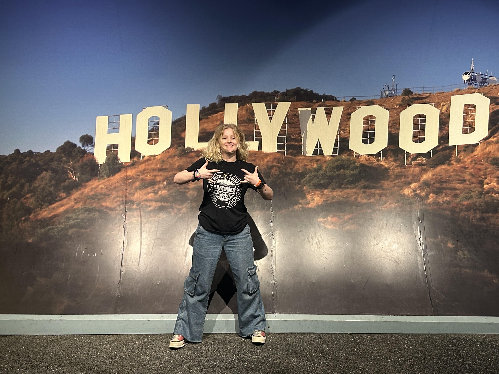

Hi! My name is Miranda. Look that's me right there!
I am a student here at FSU studying Information Technology with a minor in Innovation. "Why are you doing the innovation minor?" Lucas Von Hollen once asked me, to which I responded, "Because it's funny." And indeed, I have no other words; it did seem like a funny minor to have on my degree. Innovation. Ha ha ha. However, I am genuinely passionate about technology and finding innovative solutions to problems we face in everyday life. I am no engineer or computer science wizz, but I love to get my hands dirty and dive straight into complex projects. Last semester, I took LIS3533, and my group decided to code our own AI chatbot, which even our professor (John Marks) thought was too complex. But we gave it a shot and got a simple AI bot up and running for the assignment. Thus, I refuse to be scared of big, complex projects because even though they may be hard, you can't just tell yourself or let others tell you it can't be done. It's always worth trying, and if it explodes in your face, well- that sucks. But you tried and learned from it, and these mistakes may help you in the future. That explains why I am in this class and doing the innovation minor. I love challenging myself with new concepts and technologies.
A Little More About Me
I am originally from the Fort Myers area, so I grew up near the coast and enjoy many nature-based activities like hiking, paddleboarding, and more. I used to work for our local sea turtle conservation group, which sparked my love for innovation because we constantly had to find solutions to protect the baby sea turtles from harm and ensure they hatched safely on our beaches. Now, in college, I work at the Askew Student Life Center as a special event director, where I also have to find innovative solutions to issues that occur before and during events. Besides these extracurriculars, I also love cooking, baking, crafting, watching movies, listening to music, and playing video games. In my free time, I usually hang around the ASLC or the Innovation Hub, two of my favorite places on campus. I don't have a strong idea of what I am doing outside of college, but I do know that I enjoy product management and data analytics.
Anyways, that's all I have for you today! I hope you enjoyed this simple website I made in like 15 minutes. For other projects, I will have separate pages to organize my projects and add more fun elements, but for now this gets the job done. I am very excited for this class and have absolutely loved the lectures so far!